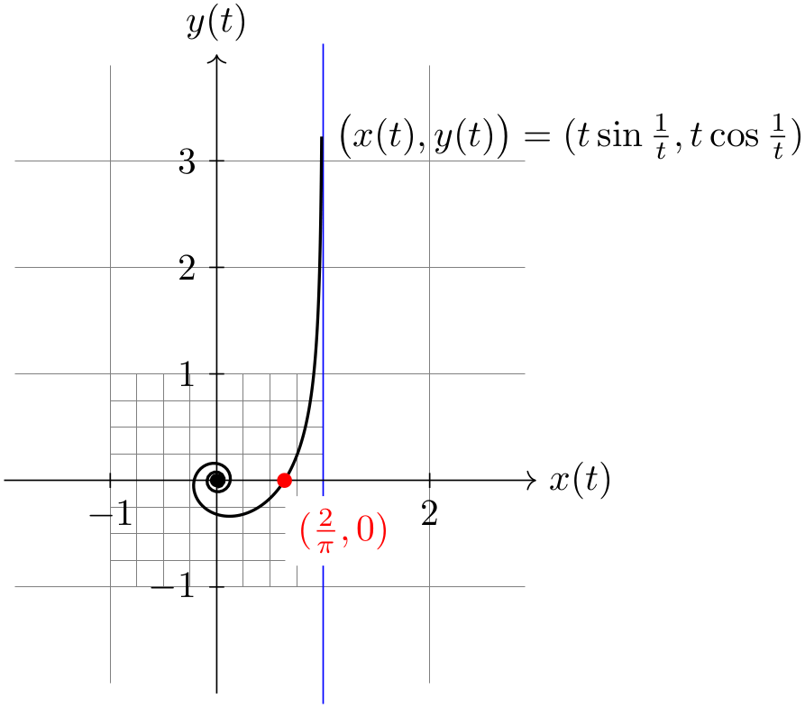

The TikZ and PGF Packages
Manual for version 3.1.9a
Part IX The Basic Layer
by Till Tantau

\begin{tikzpicture}
\draw[gray,very thin] (-1.9,-1.9) grid
(2.9,3.9)
[step=0.25cm] (-1,-1) grid
(1,1);
\draw[blue] (1,-2.1) --
(1,4.1); % asymptote
\draw[->] (-2,0) --
(3,0) node[right] {$x(t)$};
\draw[->] (0,-2) --
(0,4) node[above] {$y(t)$};
\foreach \pos in
{-1,2}
\draw[shift={(\pos,0)}] (0pt,2pt) --
(0pt,-2pt) node[below] {$\pos$};
\foreach \pos in
{-1,1,2,3}
\draw[shift={(0,\pos)}] (2pt,0pt) --
(-2pt,0pt) node[left] {$\pos$};
\fill (0,0) circle
(0.064cm);
\draw[thick,parametric,domain=0.4:1.5,samples=200]
% The plot is reparameterised such that there are more
samples
% near the center.
plot[id=asymptotic-example] function{(t*t*t)*sin(1/(t*t*t)),(t*t*t)*cos(1/(t*t*t))}
node[right] {$\bigl(x(t),y(t)\bigr) =
(t\sin \frac{1}{t}, t\cos \frac{1}{t})$};
\fill[red] (0.63662,0) circle
(2pt)
node
[below right,fill=white,yshift=-4pt] {$(\frac{2}{\pi},0)$};
\end{tikzpicture}